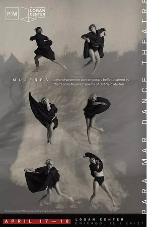

MUJERES
A shifting terrain of myth, memory, and reflection, MUJERES, P/M’s *first ever full-length ballet* invites us to meet the many versions of Chilean poet and Nobel Laureate Gabriela Mistral’s Locas Mujeres.
Preview Performance
April 17, 2026 | 7pm
Premiere and Benefit
April 18, 2026 | 7pm
Logan Center | Performance Hall
915 E. 60th Street | Chicago
With choreography by PARA.MAR founder and director Stephanie Martinez, this newest and most ambitious creation becomes a ritual of endurance, fragmentation, and return — invoking the many selves a woman carries, abandons, and reclaims across time.